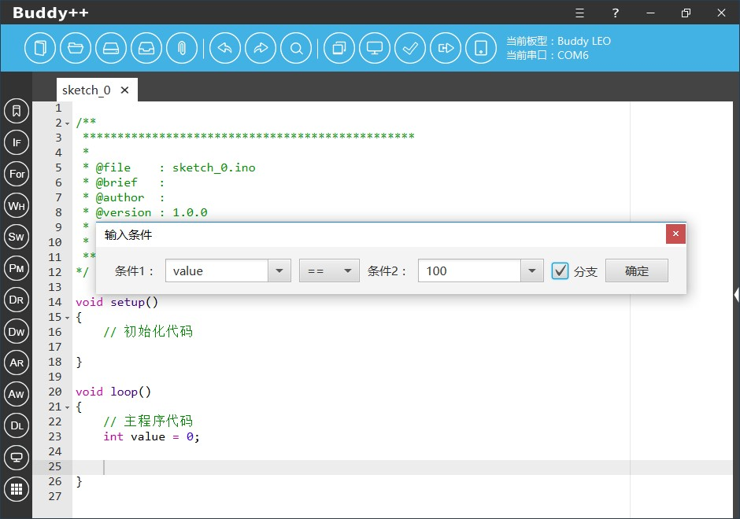
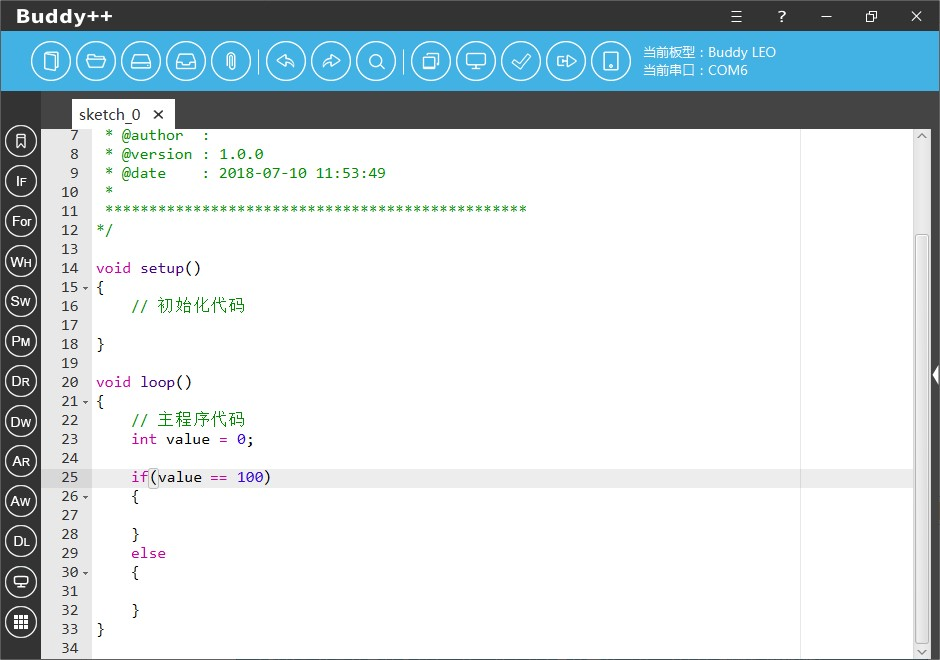

分支结构是程序设计基本思路三个基础流程中的重要一环，Buddy++通过辅助工具协助初学者使用基于IF语句的分支结构编程。
使用时开发者点击左侧工具栏纵向第二个图样为“IF”简写的图标即可弹出“If条件判断”工具，对话框中我们可以通过手动输入即将进行条件判断的变量或数值，此外我们也可以通过下来菜单选择在代码中已经声明定义的变量名称。选择好条件判断的变量后，我们需要通过中间下拉菜单选择两个变量彼此的条件判断逻辑关系，其中包括有等于、大于、大于等于、小于、小于等于五种。

默认的情况下辅助工具将会生成一段基于If语句的条件判断代码片，如果开发者勾选了“分支”复选选项，工具将会生成一段基于If…else的代码片段，开发者可以根据具体的需求作出选择。
